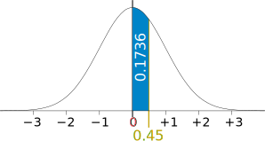
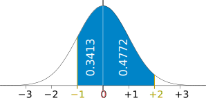

Standard Normal Distribution Table
This is the "bell-shaped" curve of the Standard Normal Distribution.
It is a Normal Distribution with mean 0 and standard deviation 1.
It shows you the percent of population:
- between 0 and Z (option "0 to Z")
- less than Z (option "Up to Z")
- greater than Z (option "Z onwards")
It only display values to 0.01%
The Table
You can also use the table below. The table shows the area from 0 to Z.
Instead of one LONG table, we have put the "0.1"s running down, then the "0.01"s running along. (Example of how to use is below)
| Z | 0.00 | 0.01 | 0.02 | 0.03 | 0.04 | 0.05 | 0.06 | 0.07 | 0.08 | 0.09 |
|---|---|---|---|---|---|---|---|---|---|---|
| 0.0 | 0.0000 | 0.0040 | 0.0080 | 0.0120 | 0.0160 | 0.0199 | 0.0239 | 0.0279 | 0.0319 | 0.0359 |
| 0.1 | 0.0398 | 0.0438 | 0.0478 | 0.0517 | 0.0557 | 0.0596 | 0.0636 | 0.0675 | 0.0714 | 0.0753 |
| 0.2 | 0.0793 | 0.0832 | 0.0871 | 0.0910 | 0.0948 | 0.0987 | 0.1026 | 0.1064 | 0.1103 | 0.1141 |
| 0.3 | 0.1179 | 0.1217 | 0.1255 | 0.1293 | 0.1331 | 0.1368 | 0.1406 | 0.1443 | 0.1480 | 0.1517 |
| 0.4 | 0.1554 | 0.1591 | 0.1628 | 0.1664 | 0.1700 | 0.1736 | 0.1772 | 0.1808 | 0.1844 | 0.1879 |
| 0.5 | 0.1915 | 0.1950 | 0.1985 | 0.2019 | 0.2054 | 0.2088 | 0.2123 | 0.2157 | 0.2190 | 0.2224 |
| 0.6 | 0.2257 | 0.2291 | 0.2324 | 0.2357 | 0.2389 | 0.2422 | 0.2454 | 0.2486 | 0.2517 | 0.2549 |
| 0.7 | 0.2580 | 0.2611 | 0.2642 | 0.2673 | 0.2704 | 0.2734 | 0.2764 | 0.2794 | 0.2823 | 0.2852 |
| 0.8 | 0.2881 | 0.2910 | 0.2939 | 0.2967 | 0.2995 | 0.3023 | 0.3051 | 0.3078 | 0.3106 | 0.3133 |
| 0.9 | 0.3159 | 0.3186 | 0.3212 | 0.3238 | 0.3264 | 0.3289 | 0.3315 | 0.3340 | 0.3365 | 0.3389 |
| 1.0 | 0.3413 | 0.3438 | 0.3461 | 0.3485 | 0.3508 | 0.3531 | 0.3554 | 0.3577 | 0.3599 | 0.3621 |
| 1.1 | 0.3643 | 0.3665 | 0.3686 | 0.3708 | 0.3729 | 0.3749 | 0.3770 | 0.3790 | 0.3810 | 0.3830 |
| 1.2 | 0.3849 | 0.3869 | 0.3888 | 0.3907 | 0.3925 | 0.3944 | 0.3962 | 0.3980 | 0.3997 | 0.4015 |
| 1.3 | 0.4032 | 0.4049 | 0.4066 | 0.4082 | 0.4099 | 0.4115 | 0.4131 | 0.4147 | 0.4162 | 0.4177 |
| 1.4 | 0.4192 | 0.4207 | 0.4222 | 0.4236 | 0.4251 | 0.4265 | 0.4279 | 0.4292 | 0.4306 | 0.4319 |
| 1.5 | 0.4332 | 0.4345 | 0.4357 | 0.4370 | 0.4382 | 0.4394 | 0.4406 | 0.4418 | 0.4429 | 0.4441 |
| 1.6 | 0.4452 | 0.4463 | 0.4474 | 0.4484 | 0.4495 | 0.4505 | 0.4515 | 0.4525 | 0.4535 | 0.4545 |
| 1.7 | 0.4554 | 0.4564 | 0.4573 | 0.4582 | 0.4591 | 0.4599 | 0.4608 | 0.4616 | 0.4625 | 0.4633 |
| 1.8 | 0.4641 | 0.4649 | 0.4656 | 0.4664 | 0.4671 | 0.4678 | 0.4686 | 0.4693 | 0.4699 | 0.4706 |
| 1.9 | 0.4713 | 0.4719 | 0.4726 | 0.4732 | 0.4738 | 0.4744 | 0.4750 | 0.4756 | 0.4761 | 0.4767 |
| 2.0 | 0.4772 | 0.4778 | 0.4783 | 0.4788 | 0.4793 | 0.4798 | 0.4803 | 0.4808 | 0.4812 | 0.4817 |
| 2.1 | 0.4821 | 0.4826 | 0.4830 | 0.4834 | 0.4838 | 0.4842 | 0.4846 | 0.4850 | 0.4854 | 0.4857 |
| 2.2 | 0.4861 | 0.4864 | 0.4868 | 0.4871 | 0.4875 | 0.4878 | 0.4881 | 0.4884 | 0.4887 | 0.4890 |
| 2.3 | 0.4893 | 0.4896 | 0.4898 | 0.4901 | 0.4904 | 0.4906 | 0.4909 | 0.4911 | 0.4913 | 0.4916 |
| 2.4 | 0.4918 | 0.4920 | 0.4922 | 0.4925 | 0.4927 | 0.4929 | 0.4931 | 0.4932 | 0.4934 | 0.4936 |
| 2.5 | 0.4938 | 0.4940 | 0.4941 | 0.4943 | 0.4945 | 0.4946 | 0.4948 | 0.4949 | 0.4951 | 0.4952 |
| 2.6 | 0.4953 | 0.4955 | 0.4956 | 0.4957 | 0.4959 | 0.4960 | 0.4961 | 0.4962 | 0.4963 | 0.4964 |
| 2.7 | 0.4965 | 0.4966 | 0.4967 | 0.4968 | 0.4969 | 0.4970 | 0.4971 | 0.4972 | 0.4973 | 0.4974 |
| 2.8 | 0.4974 | 0.4975 | 0.4976 | 0.4977 | 0.4977 | 0.4978 | 0.4979 | 0.4979 | 0.4980 | 0.4981 |
| 2.9 | 0.4981 | 0.4982 | 0.4982 | 0.4983 | 0.4984 | 0.4984 | 0.4985 | 0.4985 | 0.4986 | 0.4986 |
| 3.0 | 0.4987 | 0.4987 | 0.4987 | 0.4988 | 0.4988 | 0.4989 | 0.4989 | 0.4989 | 0.4990 | 0.4990 |
Example: Percent of Population Between 0 and 0.45

Start at the row for 0.4, and read along until 0.45: there is the value 0.1736
And 0.1736 is 17.36%
So 17.36% of the population are between 0 and 0.45 Standard Deviations from the Mean.
Because the curve is symmetrical, the same table can be used for values going either direction, so a negative 0.45 also has an area of 0.1736
Example: Percent of Population Z Between −1 and 2

From −1 to 0 is the same as from 0 to +1:
At the row for 1.0, first column 1.00, there is the value 0.3413
From 0 to +2 is:
At the row for 2.0, first column 2.00, there is the value 0.4772
Add the two to get the total between −1 and 2:
0.3413 + 0.4772 = 0.8185
And 0.8185 is 81.85%
So 81.85% of the population are between −1 and +2 Standard Deviations from the Mean.